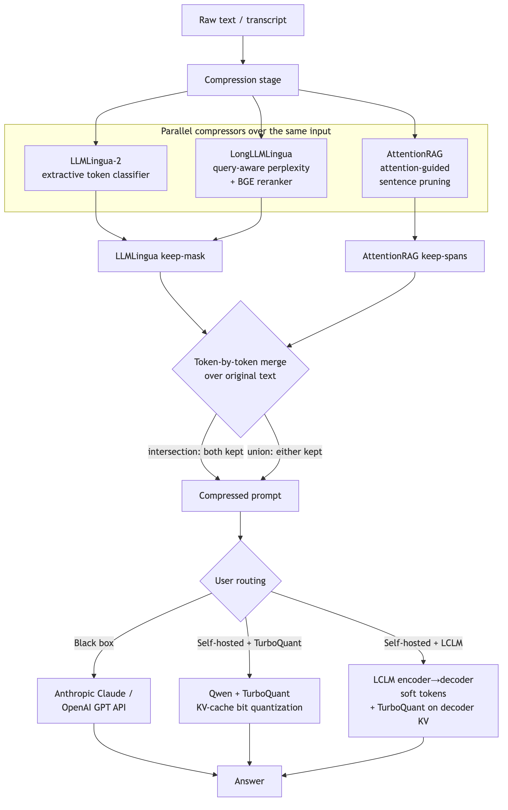

Winnow.
Voice-first, real-time token compression for LLM pipelines.
Speak — we transcribe, prune, and pipe. Losing words, keeping meaning.
Demo.
Speak — watch the transcript compress in real time, then ask the same question against the raw and pruned text side by side.
Everything under the hood.
compression
- LLMLingua-2extractive token classifier
- LongLLMLinguaquery-aware perplexity
- AttentionRAGattention-guided pruning
- BGE rerankercoarse question-aware select
generation
- Qwenself-hosted decoder
- TurboQuant~4-bit KV cache
- LCLMcontext → soft tokens
- Claude · GPTblack-box APIs
infrastructure
- Modalwarm A100 GPU workers
- FastAPIlifecycle + routing
- ngrokstable public URL
& evaluation
- Next.jslive raw-vs-pruned UI
- Deepgramnova-3 live transcription
- LongBenchF1 / EM evaluation
Compress along two
orthogonal axes.
Which words
survive.
Prune the prompt before the model ever sees it. The same text fans out to several compressors in parallel; their keep-decisions are merged token-by-token.
How it's
answered.
Shrink sequence length and KV-cache bit-width inside the model. Route the compressed prompt to a black-box API or to our self-hosted GPU workers.
Fan out, merge, route.

Fan out
One input → three compressors run in parallel over the same text, each emitting per-token keep decisions.
Merge
Keep-masks are aligned to one canonical token sequence and merged under a boolean rule — intersection or union.
Route
The compressed prompt goes to a black-box API, Qwen + TurboQuant, or LCLM + TurboQuant — the user picks.
Extractive pruning,
made query-aware.
LLMLingua-2 is a fast extractive token classifier — it labels every token keep / drop in a single forward pass. We pair it with LongLLMLingua's query-aware arm so pruning respects the question being asked.
Coarse → fine
A BGE cross-encoder reranker does coarse, question-aware selection; LLMLingua-2 then does fine, token-level keep/drop.
Perplexity focus
A "focal blank" template runs next-token prediction to weight tokens the question actually depends on.
Output
A single per-token keep-mask over the original text — ready to merge.
A second opinion,
merged token-by-token.
AttentionRAG prunes whole sentences by attention to the query — a different failure mode than perplexity. We don't pick a winner: we merge both methods' decisions over one canonical token sequence.
Intersection — aggressive
Keep a token only if both methods kept it. Up to 3.74× compression for tolerant tasks.
Union — recall-safe
Keep if either kept it. The default when buried details must survive.
Graceful fallback
If AttentionRAG gates everything out, the merge falls back to LLMLingua-only.
Self-hosted Qwen,
a quantized KV cache.
Route the compressed prompt to our own Qwen worker, generating with a TurboQuant-compressed KV cache — a data-free, random-rotation DynamicCache subclass that drops in with no retraining.
Drop-in cache
TurboQuant subclasses HF DynamicCache, so it slots into any model's past_key_values — no kernel surgery.
~4-bit KV
Online vector quantization with near-optimal distortion: 3–4× smaller KV at ~4.0 effective bits.
Output-matching
Validated end-to-end against the FP16 baseline — savings without the accuracy tax.
Two compressions,
stacked in one cache.
LCLM compresses the long context into latent soft tokens — shrinking the KV cache's sequence length. TurboQuant then quantizes that same cache's bit-width. The savings multiply.
Orthogonal axes
LCLM's decoder is a standard Qwen3 GQA stack; TurboQuant drops in as its decoder past_key_values.
The hard part
LCLM feeds the decoder inputs_embeds (soft tokens), not token ids — getting low-bit quant to compose cleanly was the key integration.
Result
15.97× sequence compression × 3.78× KV — compounding.
Warm GPUs,
one lifecycle.
Every compressor and generator runs as a warm Modal A100 worker, tied to a FastAPI server's lifecycle — models load once at startup, so real requests pay no cold-start. A static ngrok domain gives the frontend a URL it can set once.
Lifespan-bound
FastAPI's lifespan starts each Modal app on boot and tears the GPUs down on shutdown — no idle lingering.
Flag-routed
/compress picks LLMLingua vs. LLMLingua+AttentionRAG by question; /generate routes on an lclm flag.
Stable URL
A fixed ngrok domain survives backend restarts, so the frontend config never changes.
Speak, and watch
it compress.
A Next.js app streams the raw-vs-compressed diff live as you talk. Deepgram (nova-3) handles live transcription; Claude answers over the compressed transcript with prompt caching so multi-turn sessions stay cheap.
Pause = send
Each natural pause auto-sends an utterance; the compressed prompt streams to Claude and the answer streams back.
Prompt caching
Anthropic prompt caching keeps the compressed context warm across turns — multi-turn cost stays low.
Swappable source
Live mic and a recorded fixture implement one interface — a stage-safe fallback that downstream code can't tell apart.
Compression that
holds accuracy.
20 examples · ≤ 2500 words · correct = token-F1 ≥ 0.5
SQuAD-normalized F1 / EM (deterministic)
| Arm | Mean F1 | EM | Correct | Compression | Notes |
|---|---|---|---|---|---|
| lingua | 0.337 | 3/20 | 7/20 | 52.5% kept · 1.91× | token-space only |
| union | 0.407 | 6/20 | 8/20 | 62.8% kept · 1.59× | recall-safe merge |
| intersection | 0.251 | 2/20 | 5/20 | 26.8% kept · 3.74× | aggressive merge |
| vanilla_llm | 0.376 | 4/20 | 8/20 | 1.00× (baseline) | full fp16 KV |
| llm_tq | 0.437 | 6/20 | 9/20 | 3.77× KV | 4.00 eff_bits |
| vanilla_lclm | 0.554 | 8/20 | 10/20 | 1.00× KV · 15.97× seq | 16.00 eff_bits |
| lclm_tq | 0.491 | 7/20 | 9/20 | 3.78× KV · 15.97× seq | 4.00 eff_bits |